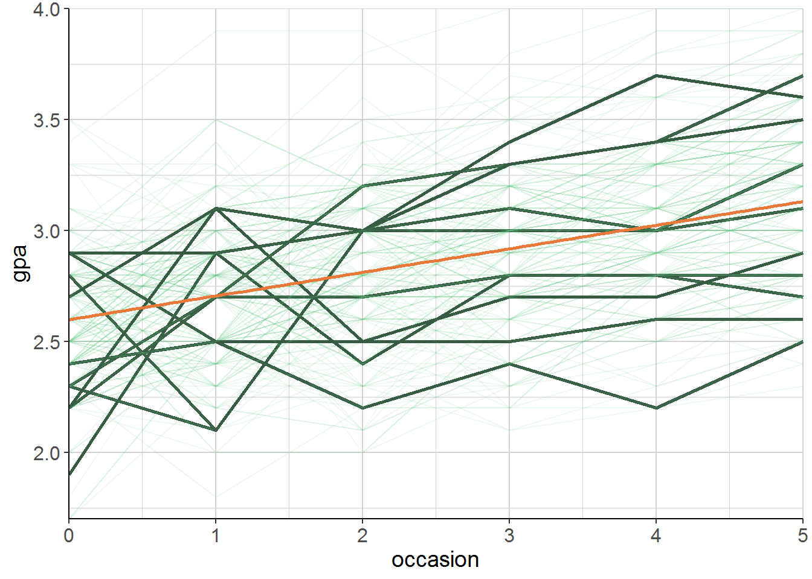

2.2 Fancy Plot zum Klauen
Sehr coole Visualisierung der Variablität in Startpunkten und Entwicklung über die Zeit. - Individuelle Pfade sowie genereller Trend trotzdem noch anschaulich abgebildet.
Reproduzierung - ist bestimmt nützlich, wenn man es selbst mal darstellen muss:

\(\to\) Siehe Skript uebungen.R – Übung #1 für einfache Regression.